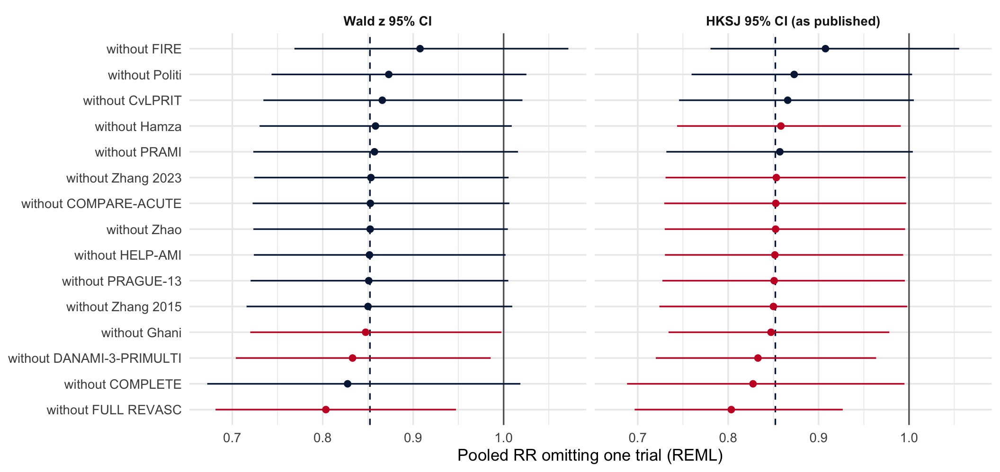
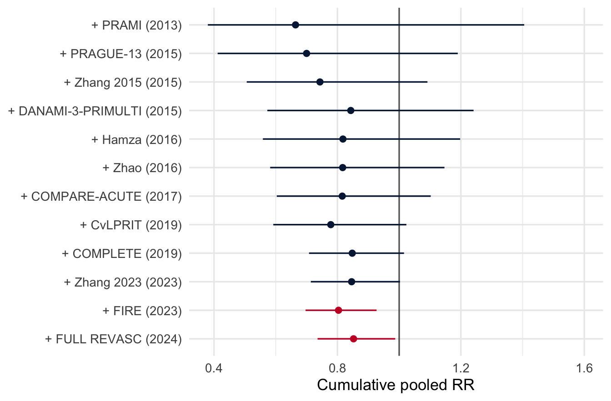
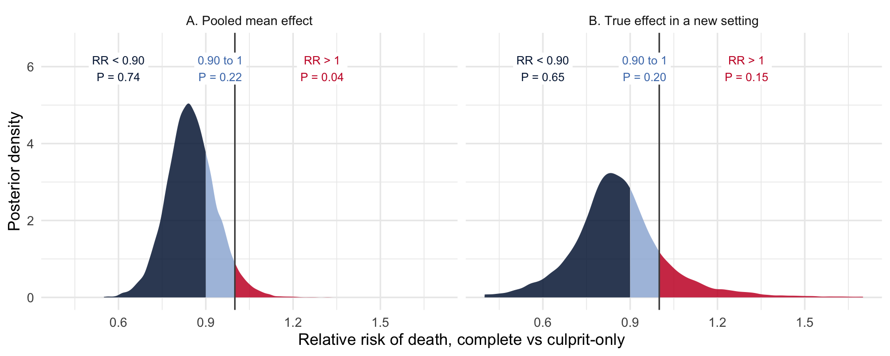

audit a published meta-analysis end to end, using only its own data;
reproduce a published confidence interval and recognise when the result depends on how the interval was built;
judge how well a meta-analysis pins down heterogeneity, and check a published prediction interval;
find which trials carry a pooled result, with leave-one-out and cumulative analyses;
re-analyse the data with a Bayesian model to answer how probable, and how large, a benefit is;
translate the result into absolute effects and an order-of-magnitude cost, and write a conclusion the data support.
R packages:dplyr, tidyr, purrr, ggplot2, patchwork, metafor, knitr; brms for code shown but not run here (its posterior draws are read from a file).
The earlier chapters each introduced one method. This chapter uses them together to audit a single, influential meta-analysis. The aim is not to find fault for its own sake: a result that has influenced clinical guidelines deserves the same scrutiny we would give our own work, and the audit is a template for reading any meta-analysis that announces a result “for the first time”.
23.1 The claim
In 2024, a systematic review and network meta-analysis of percutaneous revascularization strategies after myocardial infarction (MI) in patients with multivessel disease pooled 24 trials and 16,371 patients (1). In its pairwise meta-analysis, complete revascularization, treating all significant lesions, was associated with a 15% reduction in all-cause mortality compared with treating the culprit artery only: RR 0.85 (95% CI 0.74 to 0.99). The conclusions stated that complete revascularization reduces all-cause mortality, and the discussion that a statistically significant and clinically relevant reduction in mortality was demonstrated “for the first time”.
We ask five questions of it, using only the authors’ own data: the deaths and patients in each arm of the 15 trials in their mortality forest plot. We do not question which trials were included or how the data were extracted. Those are legitimate concerns, but the point here is that the conclusion is fragile even if the data are accepted as given, and a critique based on the authors’ own data cannot be dismissed as “you chose different trials”.
Can we reproduce the headline result, and how was the interval built?
Is the heterogeneity estimate trustworthy?
Is the prediction interval correct, and what does it say?
Which trials carry the result, and is it robust to them?
How likely is a benefit, how large is it, and what would it cost?
Figure 23.1: All-cause mortality, complete vs culprit-only revascularization: the 15 trials, the pooled estimate reproduced with the authors’ method (REML with HKSJ, navy diamond), and the correctly computed 95% prediction interval (red).
23.3 Can we reproduce it?
The paper used a REML random-effects model. That fixes the point estimate, RR 0.85, but not the confidence interval, and the methods do not say how the interval was built. Section 9.3.2 described three options: the Wald interval, which treats τ² as known; the Hartung-Knapp-Sidik-Jonkman (HKSJ) interval, which multiplies the standard error by \(\sqrt q\) and uses a t distribution, where \(q = \sum_i w_i (y_i - \hat\mu)^2/(k-1)\)(2,3); and a truncated HKSJ interval, which never lets q fall below 1, so that the interval is never narrower than the Wald interval (4,5).
Table 23.1: The same REML model with three ways of building the confidence interval.
CI method
RR (95% CI)
P
q
Wald z (τ treated as known)
0.85 (0.72 to 1.00)
0.053
not used
HKSJ
0.85 (0.74 to 0.99)
0.035
0.69
matches the paper
Truncated HKSJ (q ≥ 1)
0.85 (0.71 to 1.02)
0.074
1.00 (truncated)
Only HKSJ reproduces the published result. The answer to “is q below 1?” is in the last column: \(q\) = 0.69 (m_kh$s2w in metafor). The trials agree better than their standard errors predict, so HKSJ shrinks the interval below the Wald interval; the truncated version resets q to 1. The two intervals without that property both include 1.
Figure 23.2: The pooled relative risk of death and its 95% CI under six defensible analyses of the same 15 trials. The published analysis is in red.
Every analysis gives RR ≈ 0.85; the upper limit lies between 0.99 and 1.02, and P between 0.035 and 0.074. “Significant” or “not significant” depends on a defensible but arbitrary choice: the result sits on a knife-edge. Nothing about the data changes between P = 0.035 and P = 0.074, only the formula for the interval, and the difference between “significant” and “not significant” is not itself statistically significant (6,7). A better summary of the frequentist results is that the data are compatible with relative risks from about 0.71 to about 1.02: most compatible with a modest benefit, with neither a large benefit nor no benefit excluded.
23.4 Heterogeneity: “I² = 7%”
The paper reports I² = 7.1% and a non-significant Q test. How well do these data pin down the between-trial SD, τ?
The estimators give τ² from 0.000 to 0.091, and the Q-profile 95% CI for τ runs from 0 to 0.33, with I² anywhere from 0% to 53%. Q has little power here, because 70% of the weight sits in three trials. A non-significant Q test is absence of evidence, not evidence of absence (8); “I² = 7%” should be read as “heterogeneity uncertain”, not “homogeneous”.
What would τ = 0.33 mean? If μ and τ were known, the true effects would follow \(\theta_i \sim N(\mu, \tau^2)\), and 95% of true RRs would lie within \(e^{\mu \pm 1.96\tau}\). This describes the spread of the true effects across settings, so it uses τ, not \(SE(\hat\mu)\), which only measures how well the average is known. Centred on RR 0.85, τ = 0.33 gives true effects from 0.45 to 1.62, from large benefit to clear harm. Over the same range of τ, I² runs from 7% (at the REML τ of 0.09) to 53%, because I² = τ²/(τ² + s²) is relative to the precision of a typical trial, here s = 0.31 (9). To judge whether effects differ enough to matter clinically, look at τ or the prediction interval, not I².
23.5 The prediction interval
The prediction interval (PI) estimates where the true effect in a new setting is likely to fall (Section 9.4.1). It plugs in estimates for μ and τ, so it adds \(SE(\hat\mu)^2\) to \(\hat\tau^2\) and uses a t distribution rather than 1.96 (10–12):
Because the PI is centred on the same \(\hat\mu\) as the CI and adds a non-negative term, it always contains the CI. Anyone can check a published PI in seconds: does it contain the CI?
The paper printed “prediction interval −0.39 to −0.08” as text beside a forest plot drawn on the RR scale. On the RR scale that is 0.68 to 0.92. Its upper limit, 0.92, lies below the CI’s upper limit, 0.99, so it does not contain the CI, which is impossible.
Code
k <- m_z$kpi_t <-exp(coef(m_z) +c(-1, 1) *qt(0.975, k -2) *sqrt(m_z$tau2 + m_z$se^2)) # Higgins, t(k-2)tibble::tibble(Interval =c("CI", "PI (HKSJ, t with k − 1 df, as metafor)", "PI (Higgins, t with k − 2 df)", "PI as published"),`Log scale`=c(sprintf("%.2f to %+.2f", log(p_kh$ci.lb), log(p_kh$ci.ub)),sprintf("%.2f to %+.2f", log(p_kh$pi.lb), log(p_kh$pi.ub)),sprintf("%.2f to %+.2f", log(pi_t[1]), log(pi_t[2])), "-0.39 to -0.08"),`RR scale`=c(sprintf("%.2f to %.2f", p_kh$ci.lb, p_kh$ci.ub), sprintf("%.2f to %.2f", p_kh$pi.lb, p_kh$pi.ub),sprintf("%.2f to %.2f", pi_t[1], pi_t[2]), sprintf("%.2f to %.2f", exp(-0.39), exp(-0.08)))) |>kable(align ="lcc")
Table 23.2: Confidence and prediction intervals from the authors’ model (REML with HKSJ), on the log and RR scales.
Interval
Log scale
RR scale
CI
-0.31 to -0.01
0.74 to 0.99
PI (HKSJ, t with k − 1 df, as metafor)
-0.39 to +0.08
0.67 to 1.08
PI (Higgins, t with k − 2 df)
-0.42 to +0.10
0.66 to 1.10
PI as published
-0.39 to -0.08
0.68 to 0.92
With \(\hat\tau^2\) = 0.0073 and \(SE(\hat\mu)\) = 0.069, the correct PI on the log scale is -0.39 to +0.08. The lower limits match the published one; the upper limit has lost its sign. As published, the PI says that in every new setting complete revascularization reduces mortality by 8% to 32%. Correctly computed, it says that in a new setting the effect could be anything from a 34% reduction to a 10% increase. A transcription error turns “uncertain in a new setting” into “always beneficial”.
23.6 Where does the result come from?
Code
rr_of <- \(s) exp(es$yi[dat$study == s])no_fire <-predict(rma(yi, vi, data = es, subset = study !="FIRE"), transf = exp)b3 <-predict(rma(yi, vi, data = es, subset = study %in% big3, method ="EE"), transf = exp)tibble::tibble(Trial = big3, Population =c("Age ≥ 75, STEMI or NSTEMI", "STEMI", "Mostly STEMI"),Guidance =c("Physiology", "Angiography", "FFR"),RR =f2(sapply(big3, rr_of)), Weight =pct(w[big3] /100)) |>kable(align ="lllcc")
Trial
Population
Guidance
RR
Weight
FIRE
Age ≥ 75, STEMI or NSTEMI
Physiology
0.71
22%
COMPLETE
STEMI
Angiography
0.91
26%
FULL REVASC
Mostly STEMI
FFR
1.07
22%
Three large trials carry 70% of the weight: COMPLETE (13), FIRE (14) and FULL REVASC (15). FIRE and FULL REVASC point in opposite directions. The three alone give RR 0.89 (0.75 to 1.05); all trials except FIRE give 0.91 (0.77 to 1.07). The authors’ own STEMI-only analysis, which in effect drops FIRE, gave RR 0.91 (0.78 to 1.05) (1), and they attributed the loss of significance to the smaller sample size. But dropping FIRE removes only 13% of the patients, and the point estimate moves from 0.85 to 0.91: the pooled result depends on one trial.
There are good reasons to examine the result without FIRE. It is the only trial restricted to patients aged 75 or more, about two-thirds of them with NSTEMI, whereas the others enrolled mostly younger patients with STEMI; pooling assumes these effects are exchangeable. It is the most influential trial and shows the largest benefit of the three. And death was not its primary outcome but one component of a composite of death, MI, stroke and ischaemia-driven revascularization (14); a 29% reduction in mortality within a year is large for a strategy that acts mainly by preventing MI, and was not seen in COMPLETE or FULL REVASC. Removing the most influential and most clinically different trial is a routine sensitivity analysis (Section 10.4.1).
Code
l1o <-leave1out(m_z, transf = exp) # Wald intervalsl1o_kh <-leave1out(m_kh, transf = exp) # HKSJ intervals, same omissionsl1o_both <-bind_rows( tibble::tibble(method ="Wald z 95% CI", study = dat$study, est = l1o$estimate,lo = l1o$ci.lb, hi = l1o$ci.ub, p = l1o$pval), tibble::tibble(method ="HKSJ 95% CI (as published)", study = dat$study, est = l1o_kh$estimate,lo = l1o_kh$ci.lb, hi = l1o_kh$ci.ub, p = l1o_kh$pval)) |>mutate(method = forcats::fct_inorder(method),study = forcats::fct_reorder(paste("without", study), est), # same order in both panelssig = hi <1)ggplot(l1o_both, aes(est, study, colour = sig)) +geom_vline(xintercept =1, colour ="grey40") +geom_vline(xintercept = p_z$pred, colour = navy, linetype =2) +geom_linerange(aes(xmin = lo, xmax = hi)) +geom_point(size =2) +facet_wrap(~ method) +scale_colour_manual(values =c(`FALSE`= navy, `TRUE`= red), guide ="none") +labs(x ="Pooled RR omitting one trial (REML)", y =NULL) +theme(strip.text =element_text(face ="bold"))n_sig <-tapply(l1o_both$p <0.05, l1o_both$method, sum)

Figure 23.3: Pooled RR omitting each trial in turn, with Wald (left) and HKSJ (right, as published) 95% CIs. The point estimates are identical; only the intervals differ. Red: interval excludes 1.
Omitting FULL REVASC, which favours culprit-only treatment, makes the result clearly “significant”; omitting FIRE removes most of the effect. With Wald intervals 3 of the 15 omissions reach P < 0.05; with HKSJ, 11 of 15. The point estimates are identical in the two panels, so the count says more about how the interval is built, and where the full result sits relative to 0.05, than about the influence of any one trial. Only FIRE and FULL REVASC really move the estimate. Why does HKSJ, usually the wider interval, flag more omissions? Its interval is \(\hat\mu \pm t_{k-1}\sqrt{q}\,\text{SE}\). The \(t\) multiplier (2.16 with 13 degrees of freedom, against 1.96) widens it, but q is below 1 for every omission (0.62 to 0.74), and \(\sqrt{q}\) narrows it more, so here the HKSJ intervals are about 5% to 13% narrower than the Wald intervals. With the full result sitting at the 0.05 line, that is enough to turn most omissions “significant”. The panels do not compare two models: the model and the estimates are the same, and only the interval differs. With the truncated HKSJ interval, which sets q to 1 when it falls below 1, only one omission reaches P < 0.05.
Code
o <-order(dat$year, dat$n1i + dat$n2i)pos <-integer(length(o)); pos[o] <-seq_along(o) # each trial's place in publication ordercmk <-cumul(m_kh, order = pos, transf = exp) # metafor >= 3: 'order' is a sort key, not a permutationcum_df <- tibble::tibble(step =seq_along(o), study = dat$study[o], year = dat$year[o],est = cmk$estimate, lo = cmk$ci.lb, hi = cmk$ci.ub, p = cmk$pval) |>filter(step >=4)cum_df |>mutate(lab =factor(paste0("+ ", study, " (", year, ")"), levels =rev(paste0("+ ", study, " (", year, ")")))) |>ggplot(aes(est, lab, colour = p <0.05)) +geom_vline(xintercept =1, colour ="grey40") +geom_linerange(aes(xmin =pmax(lo, 0.38), xmax =pmin(hi, 1.6))) +geom_point(size =2) +# pmax/pmin clip wide early CIs instead of dropping themscale_colour_manual(values =c(`FALSE`= navy, `TRUE`= red), guide ="none") +scale_x_continuous(limits =c(0.38, 1.6)) +labs(x ="Cumulative pooled RR", y =NULL)cs <- \(s) cum_df[cum_df$study == s, ]

Figure 23.4: Cumulative meta-analysis in order of publication (REML, HKSJ, as published). Red: P < 0.05.
The cumulative analysis shows that the pooled result never reached P < 0.05 until 2023: after COMPLETE (2019) the RR was 0.85 with P = 0.069. FIRE, a large trial favouring complete revascularization, took it to 0.80 (P = 0.006). The last trial, FULL REVASC, with an RR against complete revascularization, pulled the estimate back to 0.85 and P up to 0.035, still below 0.05 with HKSJ but not with a Wald interval (P = 0.053). The “first time” claim therefore rests on one trial and one interval method, and the most recent evidence weakened it rather than strengthened it.
One caution about how cumul() is called. In current versions of metafor the order argument is a variable to sort by, not a list of positions, so passing the output of order() silently scrambles the sequence (a warning is given only for an inline order() call). Check that the study labels in the result come out in the order you intended.
The paper is also internally inconsistent. In its own network analyses, every way of doing complete revascularization (immediate or staged, angiography- or physiology-guided) had a non-significant effect on mortality, with RRs from 0.77 to 0.87 and upper limits from 1.04 to 1.08 (1). Only the pooled category “complete revascularization” crossed P < 0.05, and only with HKSJ. A conclusion that holds for a category but for none of its members should be stated with great caution.
23.7 A Bayesian re-analysis
A clinician wants to know how probable it is that complete revascularization reduces mortality, how probable a reduction large enough to matter is, and what to expect in their own setting. A P value answers none of these directly; a posterior distribution answers all three, and it averages over the uncertainty in τ instead of plugging in one estimate (Chapter 13). The model is the same random-effects model, with \(\mu \sim N(0, 1)\), which puts 95% of prior mass on RRs from 0.14 to 7, and τ ∼ half-N(0, 0.5), which allows anything from no heterogeneity to large heterogeneity (16):
Code
library(brms)fit_nn <-brm(yi |se(sei) ~1+ (1| study), data = es,prior =c(prior(normal(0, 1), class = Intercept), prior(normal(0, 0.5), class = sd)),iter =6000, warmup =1000, chains =4, seed =2026, control =list(adapt_delta =0.99))d <-as_draws_df(fit_nn) # columns b_Intercept (mu) and sd_study__Intercept (tau)
The 20,000 posterior draws from this model, and from three sensitivity models described below, are stored with the book:
Code
draws <-read.csv("data/ch23/revasc_draws.csv")main <-filter(draws, model =="main"); mu <- main$mu; tau <- main$tauset.seed(2026)theta_new <-rnorm(length(mu), mu, tau) # true log RR in a new settingq_rr <- \(x) exp(quantile(x, c(0.5, 0.025, 0.975)))mu_q <-q_rr(mu); new_q <-q_rr(theta_new)round(c(P_benefit =mean(mu <0), P_RR_below_0.9 =mean(mu <log(0.9)),P_RR_below_0.8 =mean(mu <log(0.8)), P_new_benefit =mean(theta_new <0)), 2)
panel_lab <-c(mu ="A. Pooled mean effect", new ="B. True effect in a new setting")dens_df <-function(x, from, to, which) { d <-density(exp(x), from = from, to = to, n =1024) tibble::tibble(x = d$x, y = d$y, panel = panel_lab[[which]])}dd <-bind_rows(dens_df(mu, 0.55, 1.35, "mu"), dens_df(theta_new, 0.4, 1.7, "new")) |>mutate(zone =case_when(x <0.9~"a", x <1~"b", TRUE~"c"), panel =factor(panel, levels = panel_lab))probs <- tibble::tibble(panel =factor(rep(panel_lab, each =3), levels = panel_lab), zone =rep(c("a", "b", "c"), 2),p =c(mean(mu <log(0.9)), mean(mu >=log(0.9) & mu <0), mean(mu >=0),mean(theta_new <log(0.9)), mean(theta_new >=log(0.9) & theta_new <0), mean(theta_new >=0)),x =rep(c(0.6, 0.95, 1.3), 2)) |>mutate(lab =paste0(c("RR < 0.90", "0.90 to 1", "RR > 1"), "\n", sprintf("P = %.2f", p)))ymax <-max(dd$y)ggplot(dd, aes(x, y)) +geom_area(aes(fill = zone), alpha =0.85) +geom_vline(xintercept =1, colour ="grey30") +geom_label(data = probs, aes(x = x, y = ymax *1.18, label = lab, colour = zone), size =3.3,label.size =0, fill ="white") +facet_wrap(~ panel, nrow =1) +scale_fill_manual(values =c(a = navy, b ="#9DB6D9", c = red), guide ="none") +scale_colour_manual(values =c(a = navy, b ="#4A7AB8", c = red), guide ="none") +scale_y_continuous(limits =c(0, ymax *1.3)) +labs(x ="Relative risk of death, complete vs culprit-only", y ="Posterior density")

Figure 23.5: Left: posterior for the pooled mean RR of death. Right: predictive distribution of the true RR in a new setting. Shading: reduction of at least 10% (dark), smaller reduction (light), harm (red).
For the pooled mean, the question for guidelines, the posterior RR is 0.85 (0.69 to 1.03), P(any benefit) = 0.96, P(reduction ≥ 10%) = 0.74 and P(reduction ≥ 20%) = 0.27. A benefit is probable; a benefit of 10% or more is likely but far from certain.
Two features may surprise. First, the credible interval is wider than the Wald interval (posterior SD of μ 0.101 vs Wald SE 0.083), because the posterior averages over all plausible τ (posterior median 0.13) instead of plugging in the REML estimate of 0.09; so P(benefit) is slightly lower than the Wald-based 1 − P/2 = 0.97. Second, P(any benefit) = 0.96 is consistent with an upper credible limit of 1.03: 2.5% of the posterior lies above 1.03, and the band from 1.00 to 1.03 is only 0.27 posterior SDs wide, in the tail, so it holds just 1.9%.
For a new setting, which adds the between-setting spread τ, the predictive RR is 0.85 (0.54 to 1.29) and P(benefit) = 0.85: in about 1 in 7 new settings the true effect would be harmful. This is the Bayesian counterpart of the prediction interval and, like the correctly computed PI, it includes harm.
23.7.1 Are the conclusions robust?
We varied the prior on τ (half-normal with scale 0.25, expecting little heterogeneity, or 1, allowing a lot) and the likelihood: an arm-based Poisson model uses the raw deaths in each arm with a log(n) offset, so the two trials with a zero cell need no 0.5 correction:
Code
long <- dat |>transmute(study, e_1 = ai, n_1 = n1i, e_0 = ci, n_0 = n2i) |>pivot_longer(-study, names_to =c(".value", "trt"), names_sep ="_") |>mutate(trt =as.numeric(trt) -0.5) # +/- 0.5 codingfit_arm <-brm(e ~0+factor(study) + trt + (0+ trt | study) +offset(log(n)), family =poisson(),data = long, prior =c(prior(normal(0, 1), class = b, coef = trt),prior(normal(-3, 2), class = b), prior(normal(0, 0.5), class = sd)),iter =6000, warmup =1000, chains =4, seed =2026, control =list(adapt_delta =0.99))
Table 23.3: Pooled mean and new-setting relative risks of death under four Bayesian analyses.
Analysis
Pooled mean RR (95% CrI)
P(RR < 1)
New-setting RR (95% PrI)
P(new RR < 1)
Main: τ ~ half-N(0.5)
0.85 (0.69 to 1.03)
0.96
0.85 (0.54 to 1.29)
0.85
τ ~ half-N(0.25)
0.85 (0.70 to 1.02)
0.96
0.85 (0.57 to 1.23)
0.87
τ ~ half-N(1)
0.85 (0.69 to 1.03)
0.96
0.85 (0.53 to 1.32)
0.84
Arm-based Poisson, raw counts
0.85 (0.69 to 1.03)
0.95
0.86 (0.55 to 1.30)
0.84
All four analyses agree on the pooled mean: a probable benefit, P about 0.95. In a new setting a benefit is likely, but harm cannot be excluded under any of them; even a fourfold change in the prior scale for τ changes little, because with 15 trials, three of them large, the data rather than the prior determine τ.
23.8 What does it mean for patients?
A relative risk says nothing about deaths prevented until it is applied to a baseline risk. Pooling the culprit-only arms gives a crude baseline risk, roughly over two years given the trials’ follow-up; but trial baseline risks vary widely, from COMPARE-ACUTE’s low-risk patients to FIRE’s elderly ones.
Code
cer <-sum(dat$ci) /sum(dat$n2i); r0 <- dat$ci / dat$n2iarr <- cer * (1-exp(mu)) # one ARR per posterior drawarr_q <-quantile(arr, c(0.5, 0.025, 0.975))rd <-escalc(measure ="RD", ai = ai, n1i = n1i, ci = ci, n2i = n2i, data = dat)m_rd <-rma(yi, vi, data = rd, method ="REML")c(baseline = cer, min_r0 =min(r0), max_r0 =max(r0)) |>round(3)
baseline min_r0 max_r0
0.066 0.000 0.155
Code
# pooled risk difference per 100 patients, with 95% CI and Pround(c(RD_per_100 =100*coef(m_rd)[[1]], lower =100* m_rd$ci.lb,upper =100* m_rd$ci.ub, P = m_rd$pval), 3)
RD_per_100 lower upper P
-0.600 -1.401 0.200 0.142
At the average baseline risk of 6.6%, the absolute risk reduction is 1.0% (95% CrI -0.2% to 2.1%), about 99 patients treated to prevent one death over about two years. The same RR prevents about 1 death per 218 patients at a 3% baseline risk, and 1 per 51 at FIRE’s 12.8%.
Meta-analysing risk differences directly gives -0.6 per 100 (95% CI -1.4 to 0.2), smaller, because the variance of a risk difference is small when risk is small, so low-risk trials get large weights: COMPARE-ACUTE carries 22% of the RD weight but 2% of the RR weight. A pooled risk difference averages over very different baseline risks and applies to no particular patient; the relative effect applied to the baseline risk of the patients in front of you is usually more useful (17) (Chapter 8).
23.8.1 Full circle: an order-of-magnitude cost per life saved
Chapter 22 built a full economic model. Here we make only an order-of-magnitude calculation: the incremental cost of complete revascularization divided by deaths prevented. The relative effect and baseline risk come from the data; every cost and life-year input is an assumption for illustration, to be replaced by local data.
Table 23.4: Inputs to the back-of-the-envelope calculation.
Input
Distribution
Source
Pooled RR of death
20,000 posterior draws
Bayesian model above
Two-year baseline risk of death
Beta(370, 5223)
Culprit-only arms
Incremental cost (extra PCI, stents, physiology wire, sometimes a staged admission)
Gamma, mean CA$8,000, SD $3,000
Assumption
Savings from fewer repeat revascularizations
Uniform $0 to $1,500
Assumption
Life-years gained per death prevented
Uniform 5 to 12
Assumption
Code
set.seed(2026); N <-length(mu)p0 <-rbeta(N, sum(dat$ci), sum(dat$n2i) -sum(dat$ci))arr_h <- p0 * (1-exp(mu)) # deaths prevented per patientcost <-rgamma(N, shape = (8000/3000)^2, rate =8000/3000^2)saving <-runif(N, 0, 1500)ly <-runif(N, 5, 12)cpd <-ifelse(arr_h >0, (cost - saving) / arr_h, Inf) # $ per death preventedcpl <- cpd / ly # $ per life-year gained# medians and 95% intervals; Inf = draws in which no deaths are preventedcq <- \(x) { v <-quantile(x, c(0.025, 0.5, 0.975)); ifelse(is.finite(v), big(v), "Inf") }print(data.frame(centile =c("2.5th", "50th", "97.5th"),deaths_per_100 =round(100*quantile(arr_h, c(0.025, 0.5, 0.975)), 1),cost_per_death =cq(cpd), cost_per_LY =cq(cpl)), row.names =FALSE)
Figure 23.6: Illustrative distribution of the cost per life-year gained with complete revascularization (log scale), combining the posterior for the relative risk with assumed costs and life-years. Draws with no deaths prevented are not shown.
About 1.0 deaths are prevented per 100 patients over two years (95% interval -0.2 to 2.1; a negative value means more deaths), at a cost of the order of $710,000 per death prevented and $87,000 per life-year gained. In 4% of draws no deaths are prevented. Because that is more than 2.5%, the 95% interval for the cost per life-year runs from $21,000 with no upper limit: when the interval for benefit includes zero, a cost per unit of benefit is unbounded. (An 80% interval, $35,000 to $360,000, is finite but hides this.) At the trials’ average risk this is borderline against a benchmark of about $50,000 per life-year, with a spread of more than tenfold. In patients at FIRE’s risk the median falls to about $45,000; at a 3% risk it rises to about $190,000.
The calculation leaves a great deal out. It counts life-years, not QALYs, without discounting. Ignoring prevented non-fatal MIs and angina relief makes complete revascularization look worse; ignoring procedural complications, and using the pooled mean rather than the new-setting effect, make it look better. All costs are assumptions. It is an illustration of how the pieces connect, not an economic evaluation.
23.9 A fair conclusion
As published: complete revascularization following MI reduces all-cause mortality, and a statistically significant and clinically relevant 15% reduction is demonstrated for the first time.
Supported by the same data: in these trials, complete revascularization was associated with a probable but uncertain reduction in all-cause mortality (RR about 0.85; 95% intervals from about 0.70 to 1.02 depending on the method). The benefit may be small, of the order of 1 death per 100 patients over two years, and depends heavily on one trial in elderly patients. In a new setting, no benefit or harm cannot be excluded. Whether it is worth its cost is unknown: a rough, illustrative calculation suggests a cost of the order of $90,000 per life-year gained, with a range of more than tenfold, and better estimates of the costs, and of which patients benefit most, are needed before definitive decisions.
“A 15% reduction in mortality” invites the conclusion that complete revascularization is clearly good and must be pursued in every patient. The evidence is more complex and nuanced than that. The benefit may well be real and worthwhile, but its existence in a given setting, its absolute size, which patients gain most, and whether it is worth its cost all remain uncertain, and these uncertainties should be stated, considered and, where it matters, resolved by further evidence, not hidden behind a single “statistically significant” number.
23.10 Checklist: reading a “first-time significant” meta-analysis
Can you reproduce it? If the methods do not say how the CI was built, try the common options.
Is the result on a knife-edge? Do Wald, HKSJ, truncated HKSJ and common-effect analyses agree?
Is HKSJ narrowing the interval? If q < 1, use the truncated version.
Is “no heterogeneity” really “unknown heterogeneity”? Look at the CI for τ, not just I².
Does the prediction interval contain the CI? If not, something is wrong.
Which trials carry the result? Leave-one-out and cumulative analyses; do the large trials agree?
How probable and how large is the benefit, and at what cost? Bayesian posterior, absolute effects and, where it matters, an economic perspective, not “P < 0.05”.
Key points
Audit with the authors’ own data: a critique that accepts their data cannot be dismissed as a different choice of trials.
The same data can be “significant” or “not significant” depending on how the interval is built; a result on a knife-edge should be reported as such.
A low I² from few large trials means heterogeneity is unknown, not absent; look at the CI for τ.
A prediction interval must contain the confidence interval; checking takes seconds.
Leave-one-out and cumulative analyses show which trials, and which recent additions, carry a result.
A Bayesian re-analysis answers the clinician’s questions: how probable a benefit is, how large, and what to expect in a new setting.
Absolute effects and even a rough cost calculation put a relative risk in perspective.
Exercises
Re-run the three CI methods without the two trials with zero cells. Does the conclusion change?
In Figure 23.3, 3 omissions reach P < 0.05 with Wald intervals but 11 with HKSJ. Re-run leave1out(m_adhoc) (truncated HKSJ). How many reach P < 0.05, and why?
Compute the posterior P(RR < 0.9) without FIRE, using a normal approximation to the frequentist result. How much does it change?
Change the assumed incremental cost to $4,000 (a same-sitting procedure) and to $15,000 (a staged admission). How does P(cost per life-year < $50,000) change?
Choose a recent meta-analysis in your field and apply the checklist.
Further reading
(1), the meta-analysis audited here, and the three large trials (13–15).
Röver C, Knapp G, Friede T. Hartung-Knapp-Sidik-Jonkman approach and its modification for random-effects meta-analysis with few studies. BMC Medical Research Methodology [Internet]. 2015;15:99. Available from: https://pmc.ncbi.nlm.nih.gov/articles/PMC4647507/
Rücker G, Schwarzer G, Carpenter JR, Schumacher M. Undue reliance on \(I^2\) in assessing heterogeneity may mislead. BMC Medical Research Methodology [Internet]. 2008;8:79. Available from: https://pmc.ncbi.nlm.nih.gov/articles/PMC2648991/
Higgins JPT, Thomas J, Chandler J, Cumpston M, Li T, Page MJ, et al., editors. Cochrane handbook for systematic reviews of interventions [Internet]. Version 6.5. Cochrane; 2024. Available from: https://training.cochrane.org/handbook